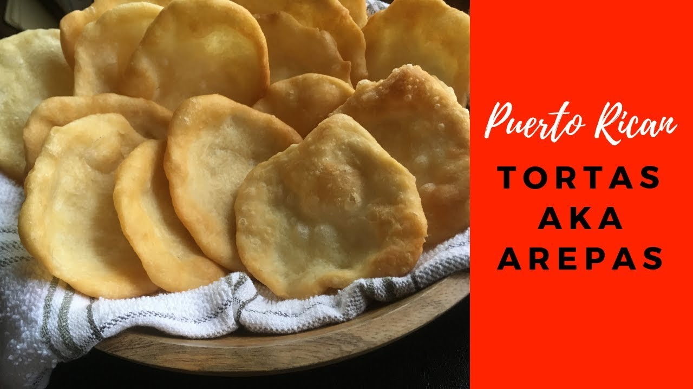

Home
Menu
Contact
Favorite Food
About

Puerto Rican Arepas
Ingredients
Click here for the ingredients
1/2 cups flour
1 pinch sugar
1 teaspoon garlic powder (optional)
1/4 cup butter, softened
1 teaspoon salt
1/4 cup water
1/2 cup vegetable oil for frying
This is information of Tortas